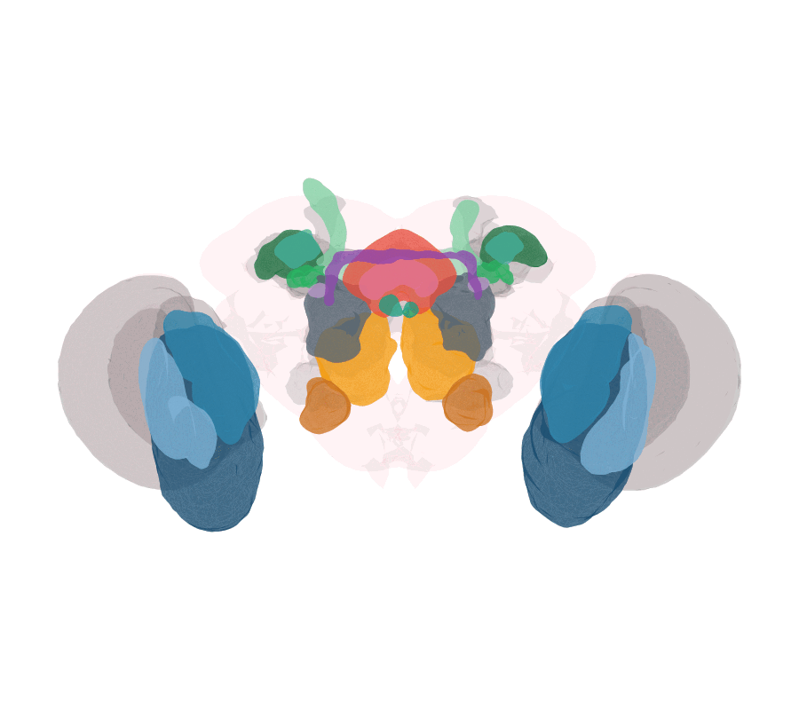

Warping a mosquito brain onto the fly by cross-identified neuropils
Source:vignettes/mosquito-to-fly.Rmd
mosquito-to-fly.RmdGoal
Register the whole-brain surface of the mosquito Aedes
aegypti onto the Drosophila JRC2018F
template — but driven by the cross-identified neuropils
the two brains share, matched left-to-left and
right-to-right so the warp respects the animals’ bilateral
symmetry. Everything below is plain R built from
deformetricar helpers.

The recipe is the one a good bridging registration uses:
- an affine pre-alignment to remove gross pose and
scale (
affine_prealign()), - a multi-object diffeomorphism
(
deformetrica_register_multi()) fit to the whole set of matched neuropils at once, each weighted, plus a weak outer hull, and - a nat.ggplot animation of the resulting geodesic
flow (
ggplot_flow_gif()).
library(deformetricar)
library(nat)
library(nat.flybrains) # JRC2018F template + JFRC2NP neuropils
library(Rvcg) # mesh decimation
# remotes::install_github("natverse/insectbrainr")
library(insectbrainr) # Aedes brain from the Insect Brain Database1. The two brains and their neuropils
The fly side is the JRC2018F outer surface plus the standard
neuropils, brought into the JRC2018F frame once. The mosquito side is
the Aedes aegypti standard brain (an hxsurf of
named neuropil sub-surfaces).
fly <- as.mesh3d(nat.flybrains::JRC2018F.surf)
fly_np <- nat.flybrains::JFRC2NP.surf
xyzmatrix(fly_np) <- nat.templatebrains::xform_brain(
xyzmatrix(fly_np), sample = "JFRC2", reference = "JRC2018F")
# Aedes has a FEMALE-only reconstruction in the Insect Brain Database.
aedes_brain <- insectbraindb_read_brain(species = "Aedes aegypti", brain.sex = "FEMALE")2. Affine pre-alignment
A diffeomorphism should not absorb a cross-species change of pose and
scale — that is the affine step’s job. affine_prealign()
centres, isotropically scales and rigidly refines the mosquito onto the
fly, and hands back an apply() closure that replays the
identical transform on any sub-object, so every mosquito
neuropil is carried into the aligned frame consistently.
pre <- affine_prealign(as.mesh3d(aedes_brain), fly, type = "rigid")
# Keep only each neuropil's largest connected component: some Insect Brain Database
# surfaces carry a stray detached fragment that cannot warp onto the compact fly
# target and would poke out of the brain.
amesh <- function(region) pre$apply(Rvcg::vcgIsolated(as.mesh3d(subset(aedes_brain, region))))
fmesh <- function(region) as.mesh3d(subset(fly_np, region))3. Cross-identified neuropils, matched per side
Homologous neuropils have different names across taxa but
the same identity. We match each mosquito neuropil to its fly
counterpart one object per side, so the fit can never
swap a left structure onto a right one. The lamina (LA) has
no fly central-brain counterpart and is dropped.
# name = c(mosquito region regex, fly region); _L / _R kept as separate objects.
paired <- list(
ME_L = c("^ME_LEFT","ME_L"), ME_R = c("^ME_RIGHT","ME_R"),
LO_L = c("^LO_LEFT","LO_L"), LO_R = c("^LO_RIGHT","LO_R"),
LOP_L= c("^LOP_LEFT","LOP_L"), LOP_R= c("^LOP_RIGHT","LOP_R"),
CA_L = c("^CA_LEFT","MB_CA_L"),CA_R = c("^CA_RIGHT","MB_CA_R"),
PED_L= c("^PED_LEFT","MB_PED_L"),PED_R=c("^PED_RIGHT","MB_PED_R"),
ML_L = c("^ML_LEFT","MB_ML_L"),ML_R = c("^ML_RIGHT","MB_ML_R"),
VL_L = c("^VL_LEFT","MB_VL_L"),VL_R = c("^VL_RIGHT","MB_VL_R"),
AL_L = c("^AL_LEFT","AL_L"), AL_R = c("^AL_RIGHT","AL_R"),
AMMC_L=c("^AMMC_LEFT","AMMC_L"),AMMC_R=c("^AMMC_RIGHT","AMMC_R"),
LAL_L= c("^LAL_LEFT","LAL_L"), LAL_R= c("^LAL_RIGHT","LAL_R"),
GA_L = c("^GA_LEFT","GA_L"), GA_R = c("^GA_RIGHT","GA_R"),
AOTU_L=c("^AOTU-UU_LEFT","AOTU_L"),AOTU_R=c("^AOTU-UU_RIGHT","AOTU_R"))
first <- function(hx, pat) grep(pat, hx$RegionList, value = TRUE)[1]
srcs <- tgts <- list()
for (nm in names(paired)) {
srcs[[nm]] <- amesh(first(aedes_brain, paired[[nm]][1]))
tgts[[nm]] <- fmesh(paired[[nm]][2])
}The central complex — a naming and a shape difference
Insect central-complex parts are named differently in mosquito and
fly, and one of them is a different shape. The mosquito
central body upper / lower divisions (CBU / CBL) are
the homologues of the fly fan-shaped body (FB) and
ellipsoid body (EB); the mosquito protocerebral bridge
(PB) and noduli (NO) match the fly PB and NO. Crucially the fly EB is a
closed ring, whereas the mosquito CBL is an open
arch — so forcing the whole shapes together distorts
the ring. We instead split each midline CX object into left and right
halves (split_mesh_lr()) and match per half, which keeps
the deformation symmetric.
mid_a <- mean(range(xyzmatrix(pre$aligned)[,1]))
mid_f <- mean(range(xyzmatrix(fly)[,1]))
cx <- list(FB = c("^FB/CBU","FB"), EB = c("^EB/CBL","EB"), PB = c("^PB_noside","PB"))
for (nm in names(cx)) {
a <- split_mesh_lr(amesh(first(aedes_brain, cx[[nm]][1])), mid = mid_a)
f <- split_mesh_lr(fmesh(cx[[nm]][2]), mid = mid_f)
srcs[[paste0(nm,"_L")]] <- a$L; tgts[[paste0(nm,"_L")]] <- f$L
srcs[[paste0(nm,"_R")]] <- a$R; tgts[[paste0(nm,"_R")]] <- f$R
}
# Noduli: mosquito NO is already L/R; the fly's single NO we split by its midline.
fno <- split_mesh_lr(fmesh("NO"), mid = mid_f)
srcs$NO_L <- amesh("^NO_LEFT"); tgts$NO_L <- fno$L
srcs$NO_R <- amesh("^NO_RIGHT"); tgts$NO_R <- fno$RSplitting an unpaired object is itself a mini-registration. A midline object has no left/right label, but every point still belongs to a hemisphere.
mirror_lr_split()recovers that the way a mirroring registration does (cf.bancr::banc_lr): reflect the object, optionally warp it onto its own reflection to find the true (curved) symmetry surface, and label each point by how far and in which direction it must travel to meet its mirror partner.split_mesh_lr()above is the flat-plane special case.
4. One diffeomorphism for the whole matched set
deformetrica_register_multi() fits a single
diffeomorphism to every matched object at once. data_sigma
weights each object — smaller means stronger — so we let the
well-matched neuropils drive the fit, damp the ring-vs-arch central
complex, and add the outer hull only as a weak global guide.
srcs <- lapply(srcs, Rvcg::vcgQEdecim, tarface = 4000L)
tgts <- lapply(tgts, Rvcg::vcgQEdecim, tarface = 4000L)
srcs$outer <- Rvcg::vcgQEdecim(pre$aligned, tarface = 12000L)
tgts$outer <- Rvcg::vcgQEdecim(fly, tarface = 12000L)
# noise-std: SMALLER = stronger attachment. Neuropils strongest; the outer hull is
# only a weak global guide; the ring-vs-arch central complex is gentler so the
# ellipsoid body is not forced into the fly's ring and over-distorted. (These
# values were tuned by iterating on the result — see the article notes.)
sigma <- setNames(rep(3.0, length(srcs)), names(srcs)) # neuropils: strong
sigma["outer"] <- 5.0 # hull: weaker but consequential
sigma[grep("^(VL|ML|PED)_", names(sigma))] <- 1.5 # MB lobes: strongest (contain the vertical lobe)
sigma[grep("^(FB|EB|PB|NO)_", names(sigma))] <- 7.0 # central complex: gentle (ring vs arch)
# A larger kernel width gives a stiffer, more GLOBAL warp, so elongated structures
# (peduncle, vertical lobe) move coherently onto their target instead of leaving a
# distal part behind. Set it from the target bounding box (~diagonal / 11).
kw <- sqrt(sum((apply(xyzmatrix(fly), 2, max) - apply(xyzmatrix(fly), 2, min))^2)) / 11
fit <- deformetrica_register_multi(
srcs, tgts, kernel_width = kw, data_sigma = sigma,
timepoints = 15L, max_iterations = 60L, device = "cuda")5. Animate the flow, coloured by homology
deformetrica_shoot(..., flow = TRUE) returns every
timepoint of the geodesic flow; ggplot_flow_gif() renders
them with nat.ggplot, each neuropil in its own colour over
a translucent fly brain, and assembles a GIF.
show <- setdiff(names(srcs), "outer") # every cross-identified neuropil
flows <- lapply(srcs[show], deformetrica_shoot,
control_points = fit$control_points, momenta = fit$momenta,
kernel_width = fit$kernel_width, timepoints = 15L,
device = "cuda", flow = TRUE)
# Family hues (optic = blue, MB = green, AL = gold, CX = warm/purple), separated
# within a family by lightness so ME/LO/LOP and CA/PED/VL/ML each read distinctly.
pal <- c(ME="#1B4F72", LO="#2E86AB", LOP="#7FB3D5",
CA="#196F3D", PED="#28B463", VL="#7DCEA0", ML="#A9DFBF", AL="#F39C12",
AMMC="#CA6F1E", LAL="#566573", GA="#C39BD3", AOTU="#45B39D",
FB="#E74C3C", EB="#E27396", PB="#8E44AD", NO="#16A085")
cols <- setNames(pal[sub("_[LR]$", "", show)], show)
ggplot_flow_gif(flows, cols = cols, volume = fly,
file = "mosquito_to_fly.gif") # needs the gifski packageFor a central-complex close-up (mosquito_cx_to_fly.gif),
animate just the
FB/EB/PB/NO (and the
gall GA) objects over the merged fly CX as the volume.
6. Validation — do the neuropils land on their counterparts?
The meaningful test is whether each warped mosquito neuropil lands on its fly homologue. Warp each and report the symmetric surface distance and a volumetric Dice overlap; the warp should beat the affine-only baseline for every neuropil.
surface_dist <- function(a, b) mean(Rvcg::vcgClostKD(a, b)$quality)
dice <- function(a, b) {
ov <- Rvcg::vcgBool(a, b, "intersection")
2 * Rvcg::vcgVolume(ov) / (Rvcg::vcgVolume(a) + Rvcg::vcgVolume(b))
}
score <- function(nm) {
w <- deformetrica_shoot(srcs[[nm]], fit$control_points, fit$momenta,
kernel_width = fit$kernel_width)
data.frame(neuropil = nm, affine = surface_dist(srcs[[nm]], tgts[[nm]]),
warp = surface_dist(w, tgts[[nm]]), dice = dice(w, tgts[[nm]]))
}
do.call(rbind, lapply(names(srcs), score))Notes
- Central-complex nomenclature (CBU/CBL vs FB/EB, and the ring-vs-arch shape of the lower unit) follows the comparative insect central-complex literature; see the fly reference atlas (Hulse et al., eLife 2021) for the fly definitions.
- The lamina is excluded throughout — it has no fly central-brain counterpart.
- Replace the whole-brain fit with a single homologous pair
(e.g. mosquito AL → fly AL) via
deformetrica_register()for a tighter, more local registration.